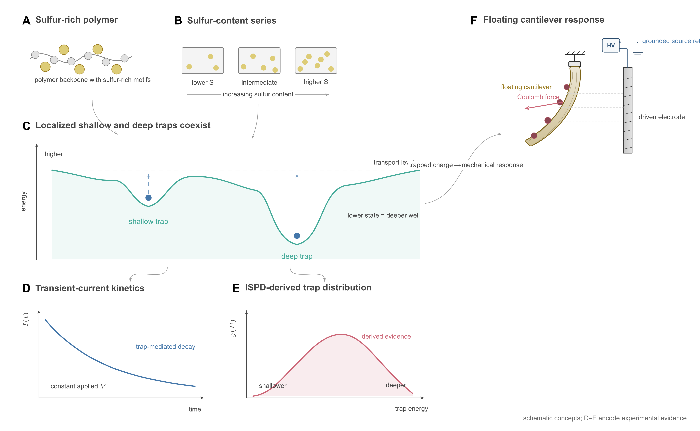
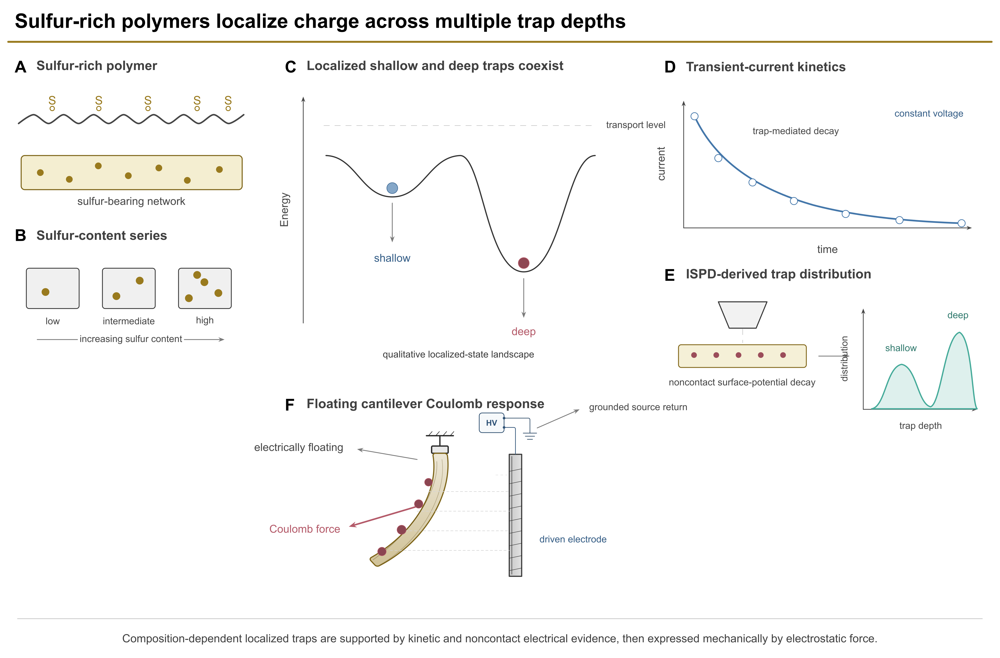

Blind first-pass composition review
This is an illustrative, weakly masked first-pass pair. Both figures use the same declared model, authoring budget, blank start, and reviewed Panel F asset, and neither received feedback or manual repair. One arm omitted a required scientific object, so this surface may reveal defects and preferences but cannot establish a causal composition-assistance benefit.


- Which option has the clearer scientific reading order and semantic hierarchy?
- Which option uses canvas area and negative space more deliberately?
- Mark only definite clipping, overlap, ambiguous connector, or illegible-label defects.
- Which option is closer to publication-ready visual finish before any repair loop?
- Give an overall verdict: A, B, tie, or neither.
This pair is invalid for a causal effectiveness claim. A machine pass is not publication acceptance.